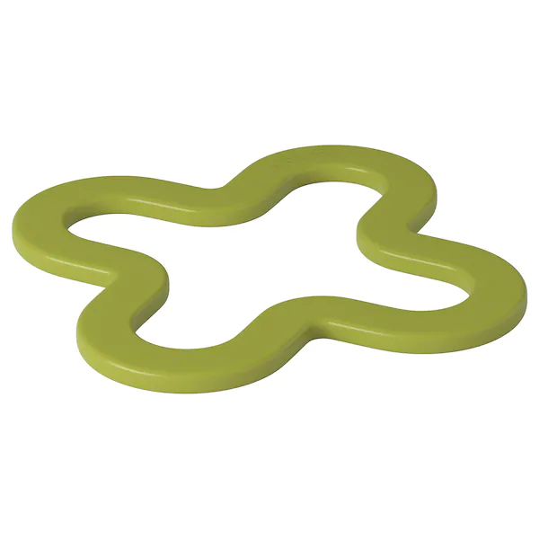
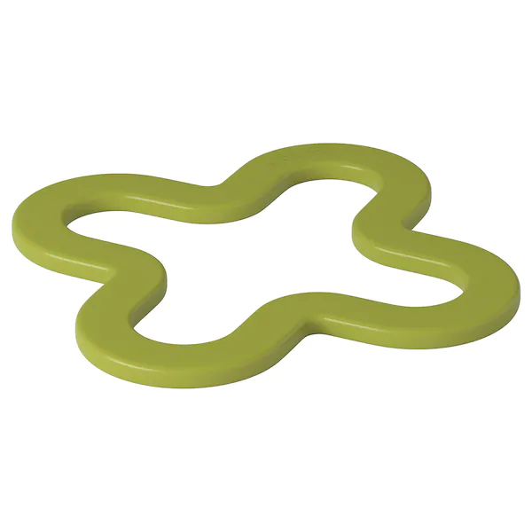
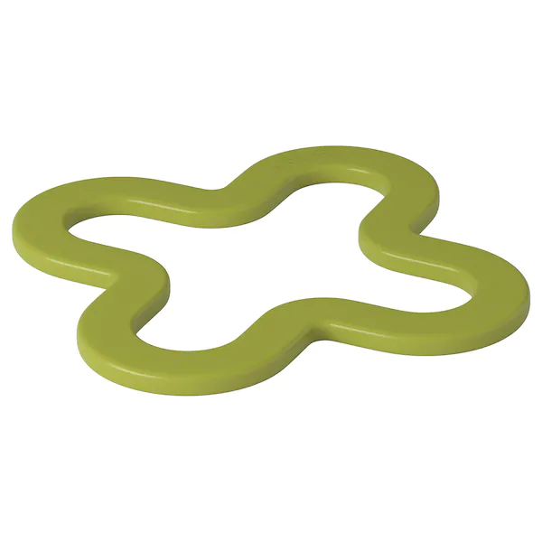

(Dian)3 STOOL
 

该凳子采用硅胶锅垫作为主要坐面材料，通过魔术贴进行连接，底部结合弧形的金属支架，打破人们对于凳子稳固却较为死板的印象。试图凭借可弹性形变的坐面增加人与物的互动，同时渲染“坐”时的包容氛围，给其使用过程增添更多趣味。

该凳子采用硅胶锅垫作为主要坐面材料，通过魔术贴进行连接，底部结合弧形的金属支架，打破人们对于凳子稳固却较为死板的印象。试图凭借可弹性形变的坐面增加人与物的互动，同时渲染“坐”时的包容氛围，给其使用过程增添更多趣味。